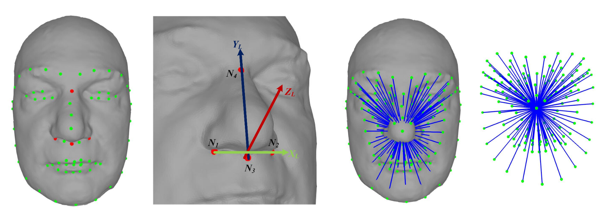
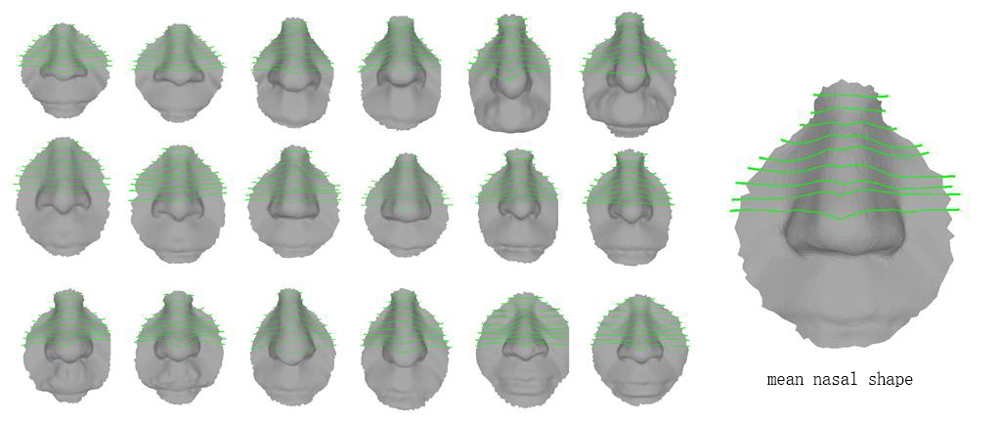

Publications
2020

3D non-rigid shape similarity measure based on Frechet distance between spectral distance distribution curve
Dan Zhang, Zhongke Wu, Xingce Wang, Chenlei Lv, Mingquan Zhou.
3D skull and face similarity measurements based on a harmonic wave kernel signature
Dan Zhang, Zhongke Wu, Xingce Wang, Chenlei Lv, Na Liu.
3D Face Modeling From Single Image Based On Discrete Shape Space
Dan Zhang, Chenlei Lv, Na Liu, Zhongke Wu, Xingce Wang.Special issue on Computer Animation and Virtual Worlds (CAVW), 2020, Accept.

3D Facial Similarity Measurement and Its Application in Facial Organization.
Chenlei Lv, Zhongke Wu, Xingce Wang, Mingquan Zhou.
Ethnicity classification by the 3D Discrete Landmarks Model measure in Kendall shape space.
Chenlei Lv, Zhongke Wu, Xingce Wang, Zhang Dan, Mingquan Zhou.2019

3D facial expression modeling based on facial landmarks in single image.
Chenlei Lv, Zhongke Wu, Xingce Wang, Mingquan Zhou.
Constructing 3D facial hierarchical structure based on surface measurements.
Chenlei Lv, Zhongke Wu, Xingce Wang, Mingquan Zhou.

Nasal similarity measure of 3D faces based on curve shape space.
Chenlei Lv, Zhongke Wu, Xingce Wang, Mingquan Zhou, Kar-Ann Toh.
3D Nose shape net for human gender and ethnicity classification.
Chenlei Lv, Zhongke Wu, Dan Zhang, Xingce Wang, Mingquan Zhou.
A Harmonic Wave Kernel Signature for Three-Dimensional Skull Similarity Measurements.
Dan Zhang, Zhongke Wu, Xingce Wang, Chenlei Lv, Mingquan Zhou.
Survey on shape descriptors based on spectral analysis for non-rigid 3D shape matching
Dan Zhang, Zhongke Wu, Xingce Wang, Chenlei Lv, Xiangyuan Liu, Mingquan Zhou.2018

3D Face Recognition based on Local Conformal Parameterization and Iso-Geodesic Stripes Analysis
Chenlei Lv, Junli Zhao.
Facial Expression Editing in Face Sketch Using Shape Space Theory.
Chenlei Lv, Zhongke Wu, Xingce Wang, Dan Zhang, Xiangyuan Liu, Mingquan Zhoupdf| project

A Patch Analysis Based Repairing Method for Two Dimensional Fiber Spectrum Image.
Xin Zheng, Chenlei Lv, Qian Yin, Ping GuoBefore...

A GPU-based statistical image up-sampling method by using edge templates.
Xin Zheng, Chenlei Lv, Qingqing Xu, Peipei Pan, Ping Guo.